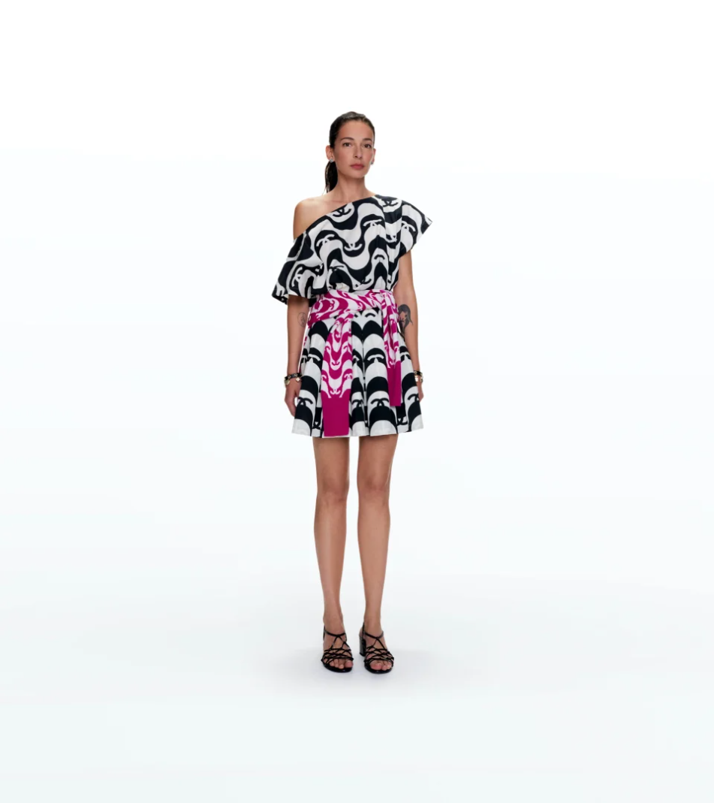
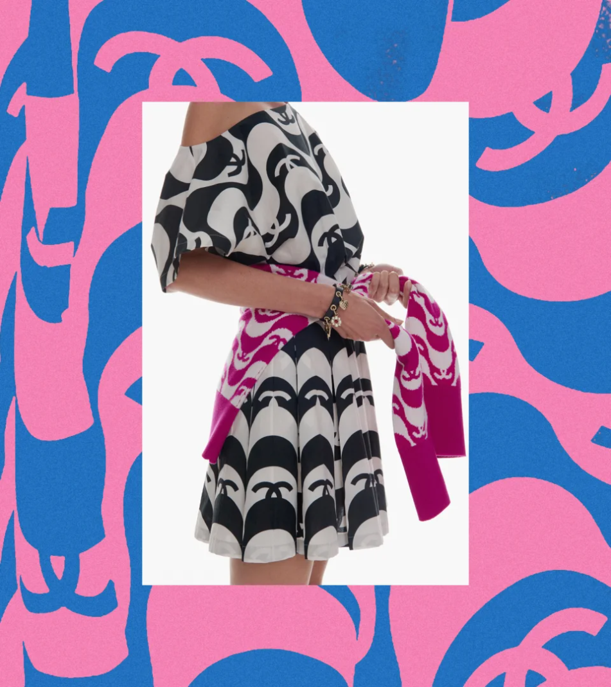
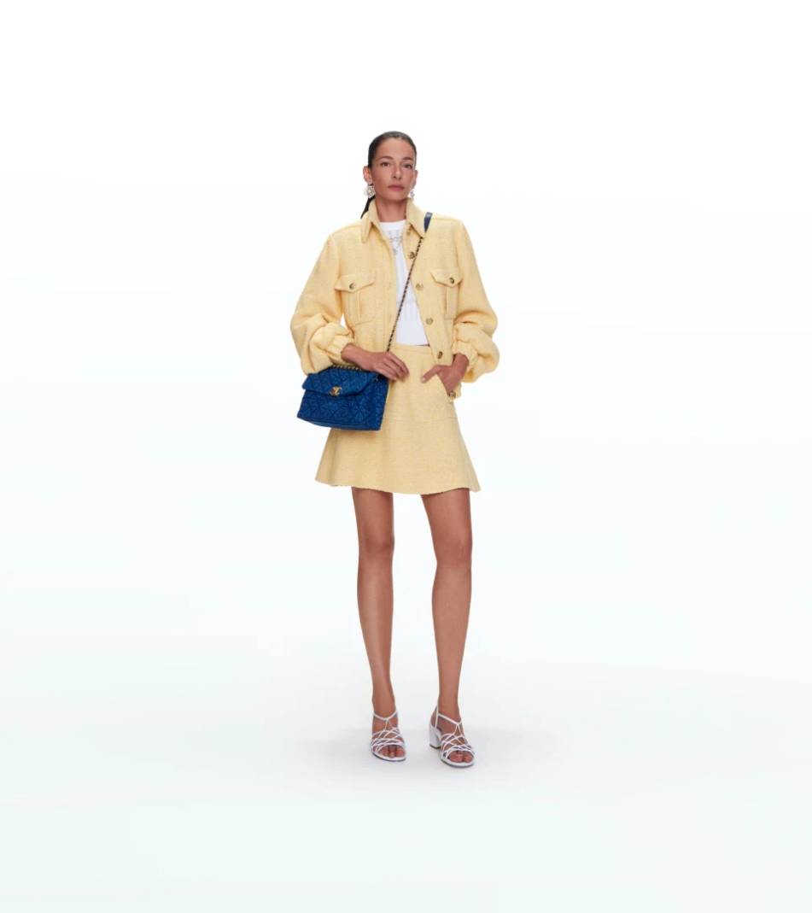
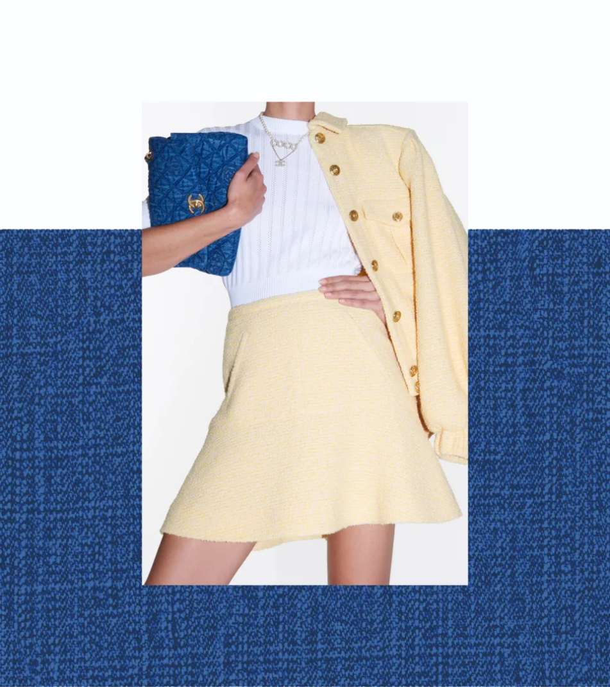
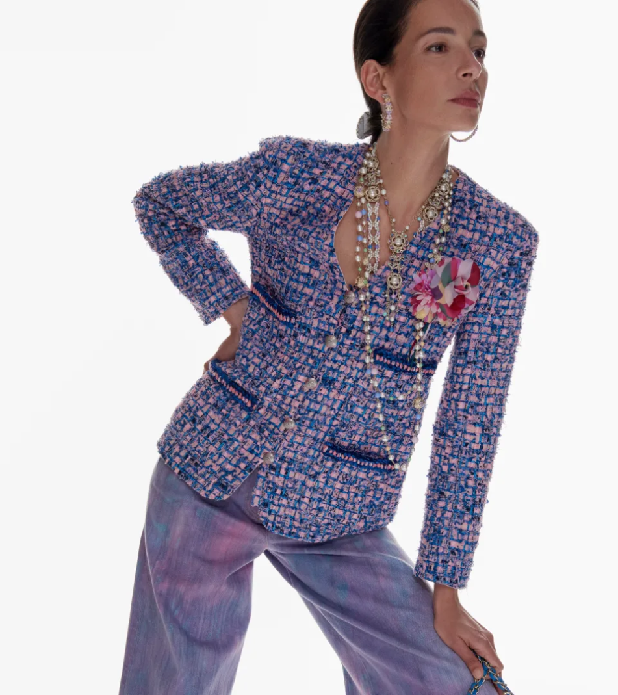
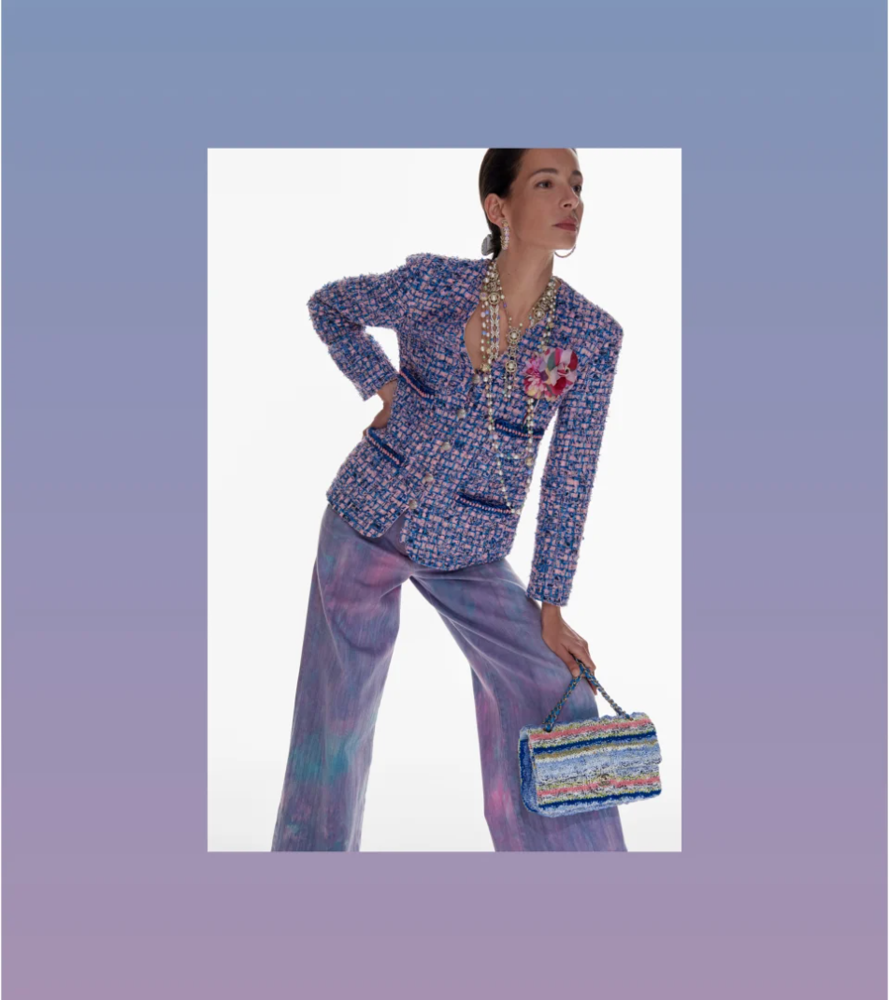

이번 프리-컬렉션은 브라질 특유의 활기 넘치는 분위기를 자아냅니다.
아만다 산체스는 이러한 열정적인 에너지를 고스란히 지니고 있습니다.
그래픽적인 모티프를 통해 브라질의 건축가 호베르투 부를리 마르스와 리스본 로시우 광장 바닥의 무늬에서 영감을 받아 탄생한 코파카바나 해변의 아틀랜틱 에비뉴(the Avenida Atlântica)에 찬사를 보냅니다.
 옐로우, 그린, 핑크와 블루 컬러가 리우데자네이루의 하늘을 연상시키는 룩을 연출합니다.
 CHANEL 트위드 재킷을 선명한 색조로 선보입니다.
 